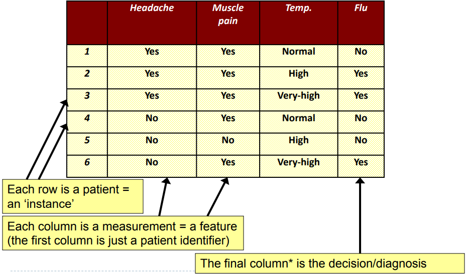
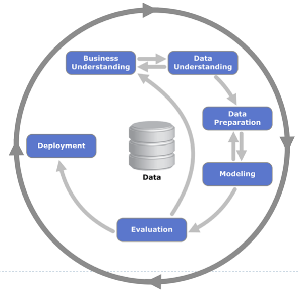
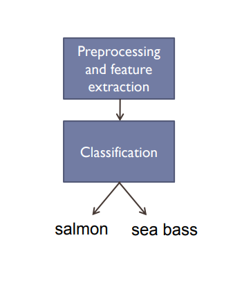
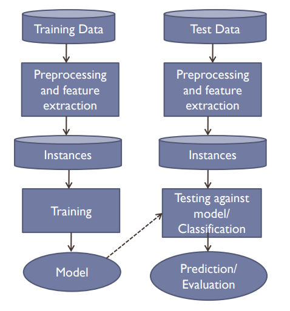
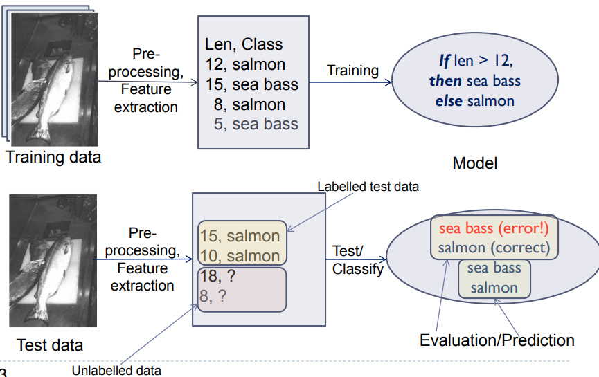
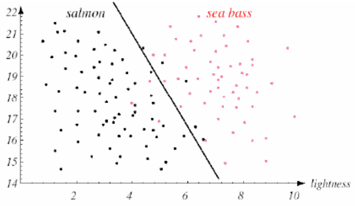
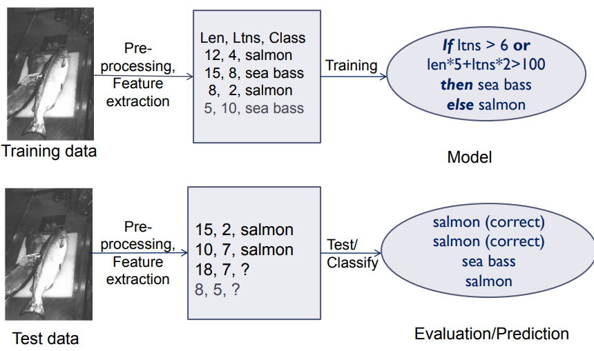
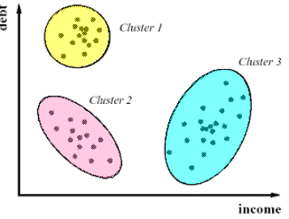

Data Mining OverviewWhat is it?Why Data Mine?What Does Data Look Like?Crisp Data MiningBusiness UnderstandingData UnderstandingData PreperationModelingEvaluationDeploymentIn PracticeClassificationExamplePreprocessingFeature extractionClassificationDomain knowledgeSo the overall classification process goes like this:Why was there an error?Decision RuleCalssification Approach 1Direct MarketingGoalApproachClustering
The extraction of interesting (non-trivial, implicit, previously unknown and potentially useful) information or patterns from data in large databases.
The process of discovering meaningful new correlations, patterns and trends by sifting through large amounts of data stored in reposotories using AI as well as statistical and mathmatical techniques.
Lots of data is being calculated
Computers have become cheaper and more powerful
Can improve your business
Can help scientists


As a business understand what information you want to get out of your data.
Understanding what it is that you want to get out of the data and what data is available to the business.
Sometimes you have to change the format of the data because it's not usable directly. Sometimes there is missing data and this needs to be dealt with, it might also involve noise removal/reduction
The technique you're using:
The "magic box" that actually gives you the information
Making sure what you've got is actually good
Eventually you do what you set out to do
Data understanding and preperation are the most important because if you fedd in the wrong infomation you will get the wrong stuff back
Learning models to predict classes
givien a collection of records/instances (training set) where each record contains a set of features one of the features is the class. We want to find a model for the class feature as a function of the values of other features.
Goal:
A fish packing plant wants to automate the process of sorting incoming fish according to species
Features used to distinguish the fish

A sea bass is longer than a salmon
Related feature
Training the classifier
Classification model
The classifier generates a model from the training data
An example model is
If length >= num



Classify new instance as sea bass if it falls on the right of the line otherwise it's salmon.

This new model is better the classifier is better, there are fewer incorrect classification.
Reduce the cost of mailing adverts by only targeting a set of consumers likely to buy a new mobile phone product
Given a set of data points find clusters using a similarity measure such that:
